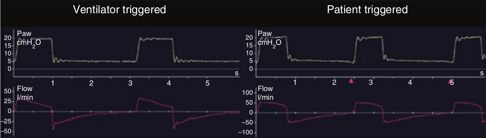

تنفس خودبخود وقتی است که دم توسط بیمار برانگیخته (ترایگر یا شروع) شود و توسط بیمار نیز سایکل (تمام) شود. اگر دم توسط ونتیلاتور برانگیخته شود و یا توسط ونتیلاتور سایکل شود (و یا هر دو) در این صورت تنفس حاصله اجباری خواهد بود. درک این نکته از نظر نامگذاری و تقسیمبندی مدهای مختلف اهمیت اساسی دارد. وقتی دم توسط بیمار برانگیخته شود، یک دندانه بسوی پایین در منحنی فشار (و یا انحراف به سمت بالا در منحنی شدت جریان) قبل از صعود فشار دمی روی میدهد. منحنی سمت راست در شکل زیر لحظه برانگیخته شدن دم توسط بیمار را با یک علامت مثلث کوچک نشان داده است.

وقتی بیمار دم را بر می انگیزد
۱ – همیشه بین تلاش دمی بیمار و انتقال جریان گاز تاخیری وجود دارد
۲ – افزایش مختصری در منحنی شدت جریان قبل از برانگیخته شدن دم نشان دهنده انگیزش شدت جریانی است
۳ – وقوع یک جریان مختصر گازی در لحظه صفر قبل از برانگیخته شدن دم نشان دهنده انگیزش فشاری است
۴ – اگر رانش (drive) تنفسی بیمار شدید باشد، دندانه فشاری ایجاد شده در لحظه انگیزش دم عمیقتر است
۵ – تمام موارد فوق صحیح است